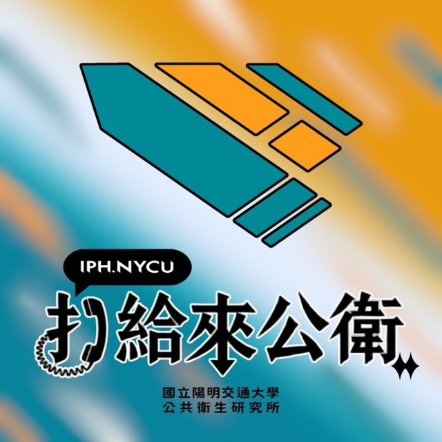

點 ▶ 播放片頭 · 按 → 跳過

陽明交大公衛所 · PODCAST
打給來公衛
第二季 新主持人招募中！
關於節目
從公衛的視角，
聊生活裡的大事。
《打給來公衛》是由國立陽明交通大學公共衛生研究所製作的 Podcast 節目。透過訪談與對話，從公共衛生的視角切入，探討生活中的重要健康與社會議題。
0第一季集數
0分鐘的對話
0位所內師長受訪
SEASON 1
第一季，我們聊了這些
SEASON 2
第二季，聊得更廣
第一季主要依照課程內容製作；第二季除了課程主題，還要增加內容的多元性，延伸到——
🔬
老師的研究
所上老師的個人研究，
從實驗室聊到生活
💭
老師關心的議題
研究之外，
老師們在意什麼？
📰
時事議題
新聞正熱的話題，
用公衛的角度解讀
🌏
公衛相關議題
環境、社會、政策……
所有和健康有關的事
你會學到
加入我們，你會學到
🎙 主持
訪談提問、臨場應對、掌握節奏
把專業知識聊成大家聽得懂的話
🎧 剪輯
音訊剪接、降噪混音、配樂音效
從原始錄音到上架的一集節目
🗂
企劃選題
從新聞與研究中找出值得聊的議題
📚
科普轉譯
讀文獻、做功課，把公衛說清楚
✍️
訪綱撰寫
設計問題、規劃一集的起承轉合
📣
社群經營
宣傳圖文、短影音與數據觀察
＋ 近距離和教授、專家對談 ＋ 團隊合作與專案管理 ＋ 一份能放進履歷的作品
我們在找你
不需要經驗，只要你——
- ✓對健康與社會議題有好奇心
- ✓喜歡聊天、喜歡聽別人的故事
- ✓想試試看麥克風前的自己
- ✓願意花時間學習、跟團隊一起成長
不敢上麥？也超歡迎加入 企劃、剪輯、社群 幕後團隊！
怎麼加入
掃我加 LINE
掃 QR code 加我 LINE
- 傳你的 學號 ＋ 姓名
- 再附上一段話為什麼想加入？想聊什麼議題？想主持還是想做幕後？
訊息範例311xxxxxx 王小明
我想加入打給來公衛！🙌
我想加入打給來公衛！🙌
換你來公衛
掃 QR code 加 LINE · 下一集，換你開麥 🎙